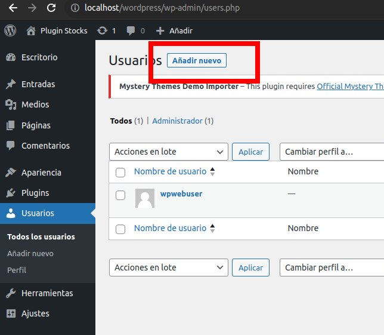
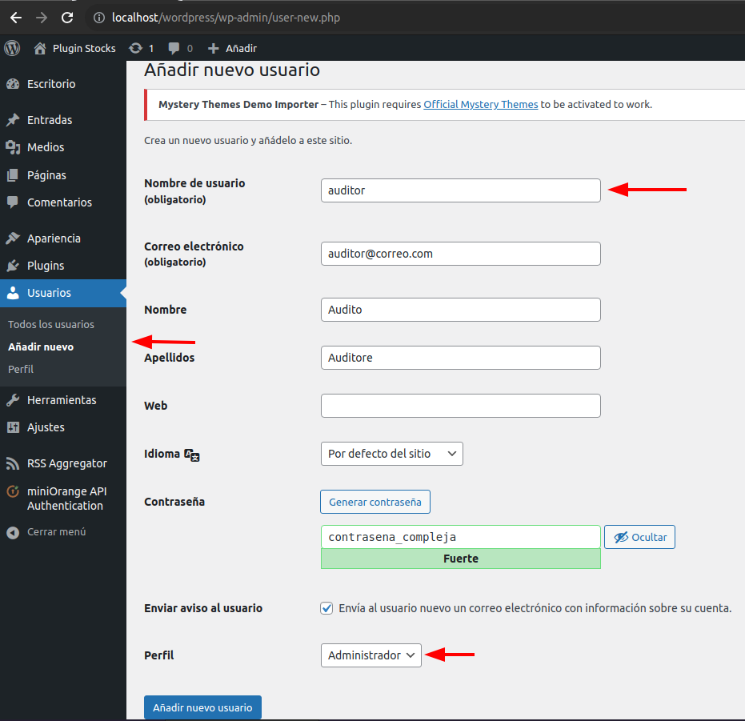
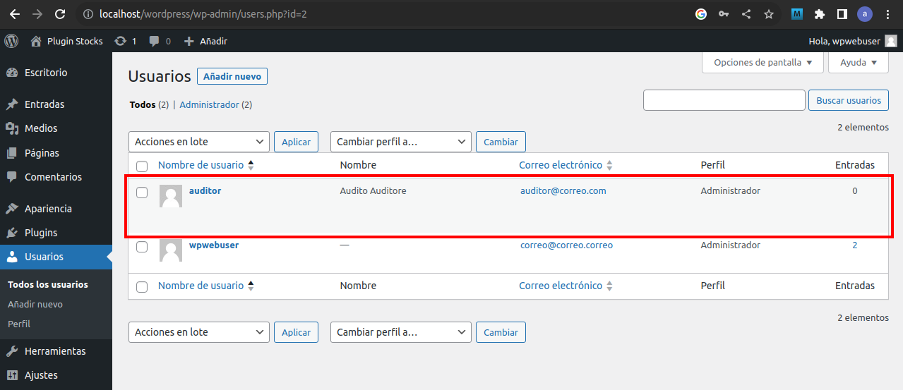
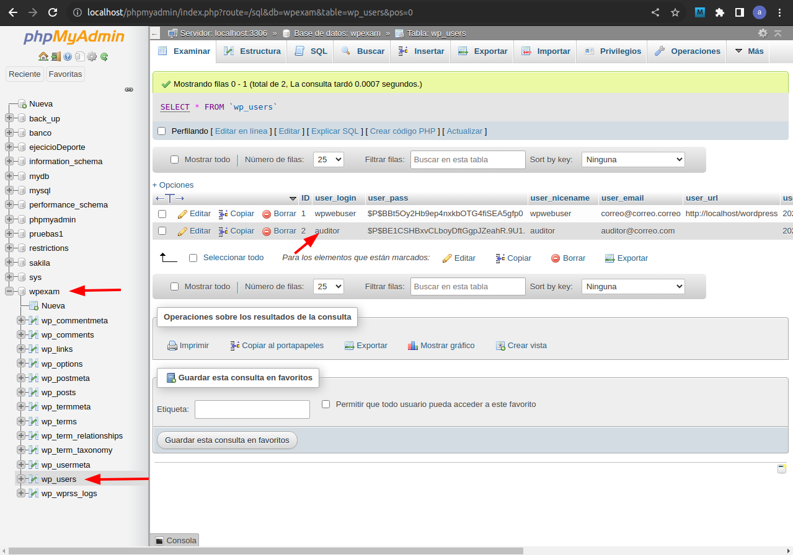
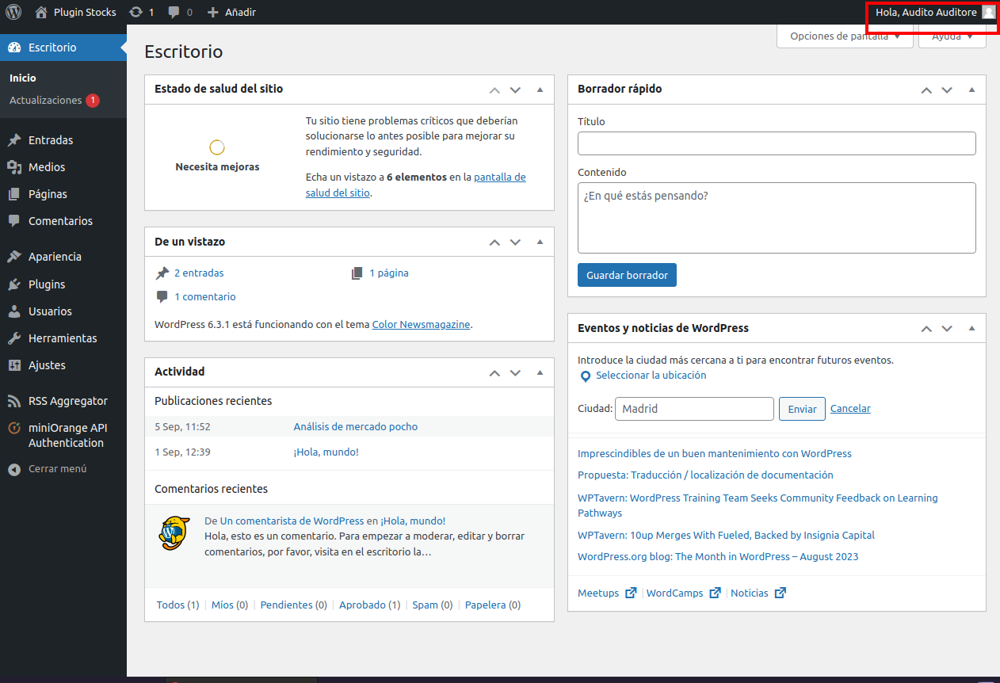

MF0968 Práctico
Enunciados:
1) Crea un nuevo usuario en tu sistema Wordpress cuya única finalidad
sea la auditoría y control del
del CMS.
Realiza las capturas de pantalla tanto del area de usuarios como de la
base datos en las que se
evidencie este nuevo usuario (3 ptos)
2) Diseña un plan de auditoría para el CMS (7 ptos)
Ejercicio 1). Solución:
Guía con capturas:
Un usuario auditor debe tener acceso a todas las funciones del wordpress, por ello se le otorgaran permisos de administrador.
Lo primero es, en el menú de administracion de wordpress, entrar en la seccion de usuarios:
A continuación, en el panel de creación, crearemos un usuario "auditor, con su nombre apellidos y correo
Entre paréntesis aparecen los campos obligatorios.
Es recomendable utilizar una contraseña segura, aqui se utiliza una de ejemplo que no es recomendable.
En la siguientes capturas se muestra la confirmación de los usuarios, tanto en wordpress como en phpmyadmin
Captura Wordpress:
Captura phpmyadmin:
Para realizar la auditoria tendrá que loguearse este usuario:
Ejercicio 2). Solución:
Plan de Auditoría para el Sistema WordPress
Sistema WordPress y Configuración:
1. Auditoría de Controles de Aplicación:
a) Flujo de Transacciones por el Sistema:
Revisar y documentar los flujos de transacciones clave en el sistema, incluidos procesos de registro, inicio de sesión, gestión de contenido y transacciones financieras si corresponde.
b) Modelo de Estudio de Riesgos:
Evaluar el modelo de estudio de riesgos existente para identificar vulnerabilidades potenciales y amenazas en el sistema WordPress. Realizar pruebas de penetración si es necesario.
c) Observación y Prueba de Procedimientos del Usuario:
Observar y documentar los procedimientos de uso comunes por parte de los usuarios finales para asegurarse de que se sigan las mejores prácticas de seguridad.
d) Prueba de Integridad de los Datos:
Realizar pruebas de integridad de datos en la base de datos de WordPress para identificar posibles inconsistencias o corrupción de datos.
e) Sistemas de Aplicación de Pruebas:
Utilizar herramientas de escaneo de seguridad y pruebas de vulnerabilidad para evaluar la seguridad de WordPress, los plugins y los temas. Realizar pruebas de seguridad de aplicaciones web.
2. Auditoría de Desarrollo, Adquisición y Mantenimiento de los Sistemas:
a) Gestión de Proyectos:
Revisar la documentación de gestión de proyectos para asegurarse de que se hayan seguido las mejores prácticas durante el desarrollo y la implementación del sistema.
b) Estudio de Factibilidad:
Evaluar la documentación del estudio de factibilidad para determinar si se identificaron riesgos y costos adecuadamente antes de la implementación.
c) Definición de Requerimientos:
Analizar la documentación de requerimientos para asegurarse de que se hayan capturado todos los requisitos funcionales y de seguridad.
d) Procesos de Adquisición de Software:
Revisar los procesos de adquisición de software, incluida la verificación de licencias y acuerdos de uso.
e) Diseño y Desarrollo de Pruebas:
Evaluar la documentación de diseño y desarrollo de pruebas para verificar que se hayan realizado pruebas adecuadas de seguridad y funcionalidad.
f) Etapa de Implementación:
Revisar el proceso de implementación, incluidos los procedimientos de instalación y configuración, para garantizar la seguridad y la integridad del sistema.
3. Revisión de la Implementación:
Realizar una revisión detallada de la implementación actual de WordPress, verificando la configuración de seguridad, los permisos de archivo y los ajustes del servidor web.
4. Auditoría de Infraestructura:
a) Revisión de Hardware:
Evaluar la infraestructura de hardware utilizada para alojar el sistema WordPress para verificar su adecuación y disponibilidad.
b) Sistema Operativo:
Realizar una revisión de seguridad del sistema operativo Ubuntu 22.04 para garantizar que esté actualizado y bien configurado.
c) Base de Datos:
Evaluar la configuración de seguridad de MariaDB 15.1 y verificar que se sigan las mejores prácticas de seguridad de base de datos.
d) Infraestructura de Red:
Realizar pruebas de seguridad de la infraestructura de red para identificar posibles vulnerabilidades.
e) Control Operativo de Redes:
Revisar los controles de seguridad de red implementados para proteger el sistema contra amenazas externas.
f) Operaciones del SI:
Evaluar los procedimientos y políticas de operaciones de seguridad de la información para garantizar su eficacia.
g) Operaciones Lights Out:
Verificar la capacidad de administración remota y las políticas de operaciones Lights Out para garantizar la disponibilidad continua del sistema.
h) Revisiones de Reportes:
Analizar informes de problemas de ganancia, disponibilidad y utilización para identificar áreas de mejora y mitigación de riesgos.
i) Cronogramas:
Evaluar los cronogramas de mantenimiento y actualizaciones para garantizar que se sigan las mejores prácticas de seguridad.